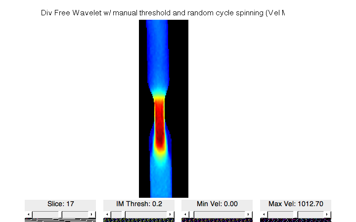
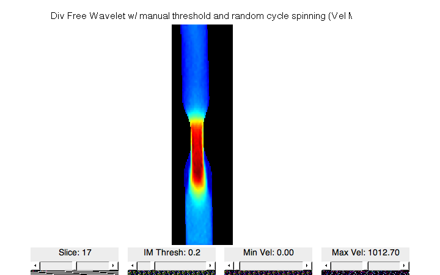

Denoise Undersampled Flow Phantom Data
The following compares divergence-free wavelet denoising with other methods on undersampled data reconstructed by ESPIRiT/SENSE with no regularization. Divergence-free wavelet with manually chosen thresholds is also compared
see demo_phantom.m for denoising performances on fully sampled data
Contents
- Clear all and check path
- Load phantom data and set parameters
- Load Reconstructed Flow from undersampled data
- DivFree Wavelet with SureShrink and MAD sigma estimation
- DivFree Wavelet with SureShrink, MAD and random cycle spinning
- DivFree Wavelet with SureShrink and manually chosen thresholds
- Finite Difference Method
- DivFree Radial Basis Function
- Plot all
Clear all and check path
close all clc clear if ~exist('dfwavelet_thresh','file') error('Cannot find dfwavelet functions. run setPath!'); end
Load phantom data and set parameters
load 4dFlow_007 % Eddy Current Correction calib = [127-100,128+100;127-40,128+40;32-20,32+20]; [vxEddy,vyEddy,vzEddy] = eddyCorr(vx,vy,vz,calib); vx = vx-vxEddy; vy = vy-vyEddy; vz = vz-vzEddy; % Crop to pipe for faster performance % Comment the following to denoise the entire flow data imMag = imMag(20:250,1:64,17:49); vx = vx(20:250,1:64,17:49); vy = vy(20:250,1:64,17:49); vz = vz(20:250,1:64,17:49); vxEddy = vxEddy(20:250,1:64,17:49); vyEddy = vyEddy(20:250,1:64,17:49); vzEddy = vzEddy(20:250,1:64,17:49); % Set parameters imThresh = 7000; % Image threshold for segmentation imMask = (imMag>imThresh)*1; % Segmentation mask vMag = getVelMag(vx,vy,vz); % Velocity magnitude vMax = 1.0127e+03; % Maximum speed FOV = size(vMag); % Field of view N = FOV(3); % Number of slices (for plotting) ph0 = zeros(FOV); % Reference phase in phase contrast % Plot figure,imshow_flow(imMask,vx,vy,vz,vMax,[1,2,3]),title('Original Flow Field','FontSize',14); figure,imshow_flowmag(imMask,vx,vy,vz,vMax,[1,2,3]),title('Original Velocity Magnitude','FontSize',14); pause(1);
Load Reconstructed Flow from undersampled data
load 4dFlow_007_subsample % Crop to pipe for faster performance % Comment the following to denoise the entire flow data vxN = vxN(20:250,1:64,17:49); vyN = vyN(20:250,1:64,17:49); vzN = vzN(20:250,1:64,17:49); % Eddy Current Correction vxN = vxN-vxEddy; vyN = vyN-vyEddy; vzN = vzN-vzEddy; % Mask flow data with good segmentation [vxN,vyN,vzN] = maskIM(imMask,vxN,vyN,vzN); % Plot figure,imshow_flow(imMask,vxN,vyN,vzN,vMax,[1,2,3]),title('Reconstructed Flow Field','FontSize',14); figure,imshow_flowmag(imMask,vxN,vyN,vzN,vMax,[1,2,3]),title('Reconstructed Velocity Magnitude','FontSize',14); % Calculate errors disp('Reconstructed Flow Error') [vNRMSE_Noise,vMagErr_Noise,angErr_Noise] = calcVelError(imMask,vx,vy,vz,vxN,vyN,vzN); PVNR = 20*log10(1/vNRMSE_Noise); fprintf('PVNR: \t\t\t%.2fdB\nNRMSE: \t\t\t%f\nvMag Error: \t\t%f\nAbsolute Angle Error: \t%f\n\n',PVNR,vNRMSE_Noise,vMagErr_Noise,angErr_Noise); pause(1)
Reconstructed Flow Error PVNR: 29.47dB NRMSE: 0.033631 vMag Error: 0.019393 Absolute Angle Error: 0.024910
DivFree Wavelet with SureShrink and MAD sigma estimation
Here, we use Median Absolute Deviation to estimate noise std and then use SureShrink to find the optimal threshold that minimizes MSE
minSize = 8*ones(1,3); % Smallest wavelet level size % Denoise [vxDFWsm,vyDFWsm,vzDFWsm] = dfwavelet_thresh_SURE_MAD(vxN,vyN,vzN,minSize,res); % Plot figure,imshow_flow(imMask,vxDFWsm,vyDFWsm,vzDFWsm,vMax,[1,2,3]) title('Div Free Wavelet w/ SureShrink (Flow Field)','FontSize',14) figure,imshow_flowmag(imMask,vxDFWsm,vyDFWsm,vzDFWsm,vMax,[1,2,3]) title('Div Free Wavelet w/ SureShrink (Vel Mag)','FontSize',14) % Calculate errors disp('DivFree Wavelet sureShrink w/ MAD') [vNRMSE_DFWsm,vMagErr_DFWsm,angErr_DFWsm] = calcVelError(imMask,vx,vy,vz,vxDFWsm,vyDFWsm,vzDFWsm); fprintf('NRMSE: \t\t\t%f\nvMag Error: \t\t%f\nAbsolute Angle Error: \t%f\n\n',vNRMSE_DFWsm,vMagErr_DFWsm,angErr_DFWsm); pause(1);
DivFree Wavelet sureShrink w/ MAD NRMSE: 0.030420 vMag Error: 0.017794 Absolute Angle Error: 0.021827


DivFree Wavelet with SureShrink, MAD and random cycle spinning
To remove the blocking artifacts, we do partial cycle spinning Here we do 2^3=8 random shifts
spins = 2; % Number of cycle spinning per dimension isRandShift = 1; % Use random shift minSize = 8*ones(1,3); % Smallest wavelet level size % Denoise [vxDFWsms,vyDFWsms,vzDFWsms] = dfwavelet_thresh_SURE_MAD_spin(vxN,vyN,vzN,minSize,res,spins,isRandShift); % Plot figure,imshow_flow(imMask,vxDFWsms,vyDFWsms,vzDFWsms,vMax,[1,2,3]) title('Div Free Wavelet w/ SureShrink and Partial Cycle Spinning (Flow Field)','FontSize',14) figure,imshow_flowmag(imMask,vxDFWsms,vyDFWsms,vzDFWsms,vMax,[1,2,3]) title('Div Free Wavelet w/ SureShrink and Partial Cycle Spinning (Vel Mag)','FontSize',14) % Calculate errors disp('DivFree Wavelet w/ SureShrink, MAD and Partial Cycle Spinning') [vNRMSE_DFWsms,vMagErr_DFWsms,angErr_DFWsms] = calcVelError(imMask,vx,vy,vz,vxDFWsms,vyDFWsms,vzDFWsms); fprintf('NRMSE: \t\t\t%f\nvMag Error: \t\t%f\nAbsolute Angle Error: \t%f\n\n',vNRMSE_DFWsms,vMagErr_DFWsms,angErr_DFWsms); pause(1);
DivFree Wavelet w/ SureShrink, MAD and Partial Cycle Spinning NRMSE: 0.029874 vMag Error: 0.017450 Absolute Angle Error: 0.021446
DivFree Wavelet with SureShrink and manually chosen thresholds
spins = 2; % Number of cycle spinning per dimension isRandShift = 1; % Use random shift minSize = 8*ones(1,3); % Smallest wavelet level size dfThresh = 15; % Threshold for divfree component nThresh = 20; % Threshold for non-divfree component % Denoise [vxDFW,vyDFW,vzDFW] = dfwavelet_thresh_spin(vxN,vyN,vzN,minSize,res,dfThresh,nThresh,spins,isRandShift); % Plot figure,imshow_flow(imMask,vxDFW,vyDFW,vzDFW,vMax,[1,2,3]), title('Div Free Wavelet w/ manual threshold and random cycle spinning (Flow Field)','FontSize',15) figure,imshow_flowmag(imMask,vxDFW,vyDFW,vzDFW,vMax,[1,2,3]), title('Div Free Wavelet w/ manual threshold and random cycle spinning (Vel Mag)','FontSize',15) % Calculate errors vMagDFW = getVelMag(vxDFW,vyDFW,vzDFW); disp('DivFree Wavelet w/ Manual Thresh') [vNRMSE_DFW,vMagErr_DFW,angErr_DFW] = calcVelError(imMask,vx,vy,vz,vxDFW,vyDFW,vzDFW); fprintf('NRMSE: \t\t\t%f\nvMag Error: \t\t%f\nAbsolute Angle Error: \t%f\n\n',vNRMSE_DFW,vMagErr_DFW,angErr_DFW); pause(1);
DivFree Wavelet w/ Manual Thresh NRMSE: 0.023951 vMag Error: 0.015891 Absolute Angle Error: 0.015785
 
 Finite Difference Method
The following implements finite difference method denoising as described in: Song SM, Pelc NJ., et al. JMRI 1993 Noise reduction in three-dimensional phase-contrast MR velocity measurements.
% Denoise [vxFDM,vyFDM,vzFDM] = fdmDenoise(vxN,vyN,vzN,res); % Plot figure,imshow_flow(imMask,vxFDM,vyFDM,vzFDM,vMax,[1,2,3]) title('Div Free FDM','FontSize',14) figure,imshow_flowmag(imMask,vxFDM,vyFDM,vzFDM,vMax,[1,2,3]) title('Div Free FDM','FontSize',14) % Calculate errors disp('Finite Difference Method Error') [vNRMSE_FDM,vMagErr_FDM,angErr_FDM] = calcVelError(imMask,vx,vy,vz,vxFDM,vyFDM,vzFDM); fprintf('NRMSE: \t\t\t%f\nvMag Error: \t\t%f\nAbsolute Angle Error: \t%f\n\n',vNRMSE_FDM,vMagErr_FDM,angErr_FDM); pause(1);
Finite Difference Method Error NRMSE: 0.038941 vMag Error: 0.023989 Absolute Angle Error: 0.029318
DivFree Radial Basis Function
The following implements divergence-free radial basis function denoising as described in: Busch J, Kozerke S., et al. MRM 2012 Construction of divergence-free velocity fields from cine 3D phase-contrast flow measurements.
radius = 4; % Radius of kernel nIter = 20; % Number of iterations for lsqr % Plot during iterations, if on, does gradient descent instead of lsqr doplot = 0; % Denoise % Takes a while to run [vxRBF,vyRBF,vzRBF] = rbfDenoise(vxN,vyN,vzN,imMask,radius,res,nIter,doplot); % Plot figure,imshow_flow(imMask,vxRBF,vyRBF,vzRBF,vMax,[1,2,3]), title('Div Free RBF','FontSize',14) figure,imshow_flowmag(imMask,vxRBF,vyRBF,vzRBF,vMax,[1,2,3]), title('Div Free RBF','FontSize',14) % Calculate errors disp('Radial Basis Function Error') [vNRMSE_RBF,vMagErr_RBF,angErr_RBF] = calcVelError(imMask,vx,vy,vz,vxRBF,vyRBF,vzRBF); fprintf('NRMSE: \t\t\t%f\nvMag Error: \t\t%f\nAbsolute Angle Error: \t%f\n\n',vNRMSE_RBF,vMagErr_RBF,angErr_RBF); pause(1);
RBF Denoising... done Radial Basis Function Error NRMSE: 0.023357 vMag Error: 0.015485 Absolute Angle Error: 0.015471
Plot all
Plotting results from all methods.
figure,imshow_flowmag(... cat(2,imMask,imMask,imMask,imMask,imMask,imMask),... cat(2,vx,vxN,vxDFWsms,vxDFW,vxFDM,vxRBF),... cat(2,vy,vyN,vyDFWsms,vyDFW,vyFDM,vyRBF),... cat(2,vz,vzN,vzDFWsms,vzDFW,vzFDM,vzRBF),... vMax,[1,2,3]); title('Original,Noisy,DFW/spin,DFW/manual,FDM and RBF','FontSize',14)